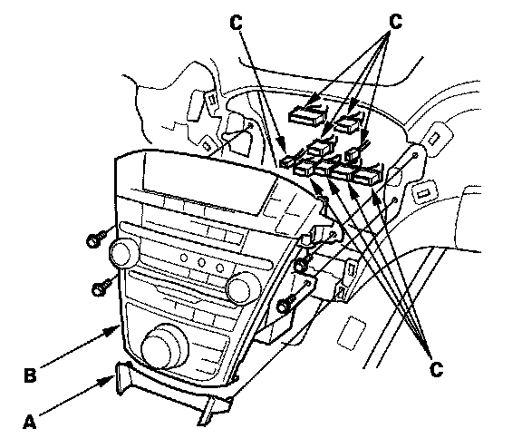

Audio Unit Removal/Installation
Audio Unit Removal/InstallationSRS components are located in this area. Review the SRS component locations, and the precautions and procedures before performing repairs or service.
NOTE:
- Put on gloves to protect your hands.
- Take care not to scratch the dashboard and related parts.
- Lay a workshop towel under the parts when working on them to protect the face panel from scratches or other damage.
1. Make sure you have anti-theft codes for the audio system.
2. Remove the driver's inner dashboard trim, and front passenger's dashboard trim.

3. Remove the console lower trim panel (A) and the self tapping screws, then pull out the audio unit (B).
4. Disconnect the connectors (C), then remove the audio unit.
5. Remove the climate control unit.
6. Remove the screws and the audio unit (A) from the audio panel (B).
7. Install the audio unit in the reverse order of removal, and note these items:
- Make sure all the connectors and the antenna lead are secure.
- Enter the anti-theft codes for the audio system, and set the clock.
- If necessary, enter the navigation system code.